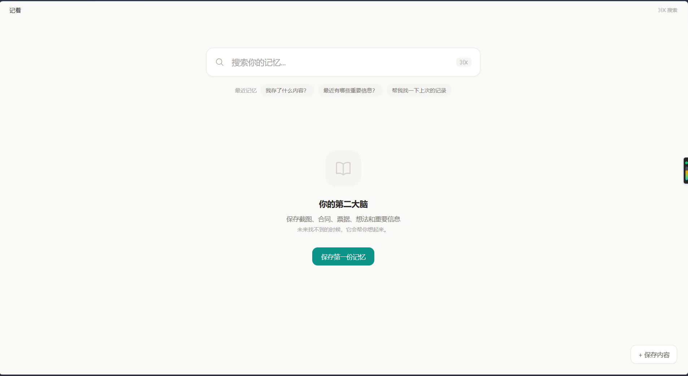
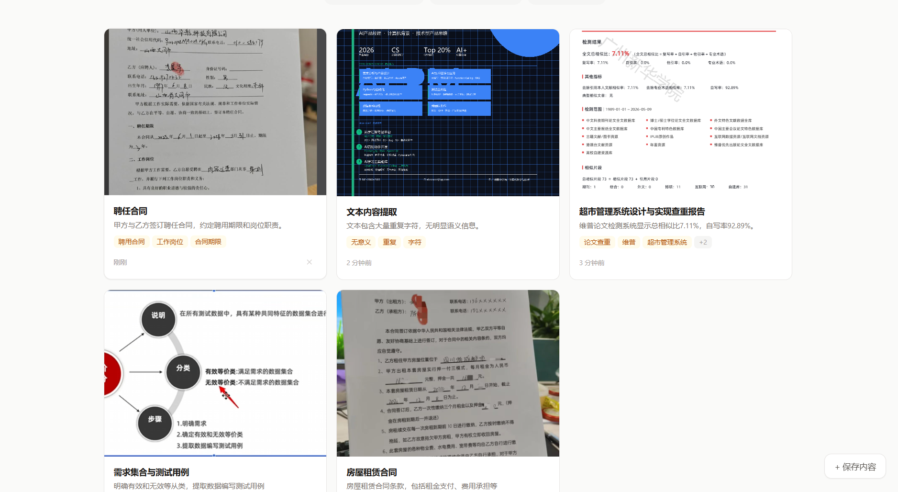
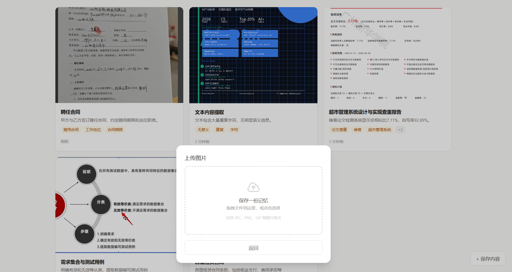
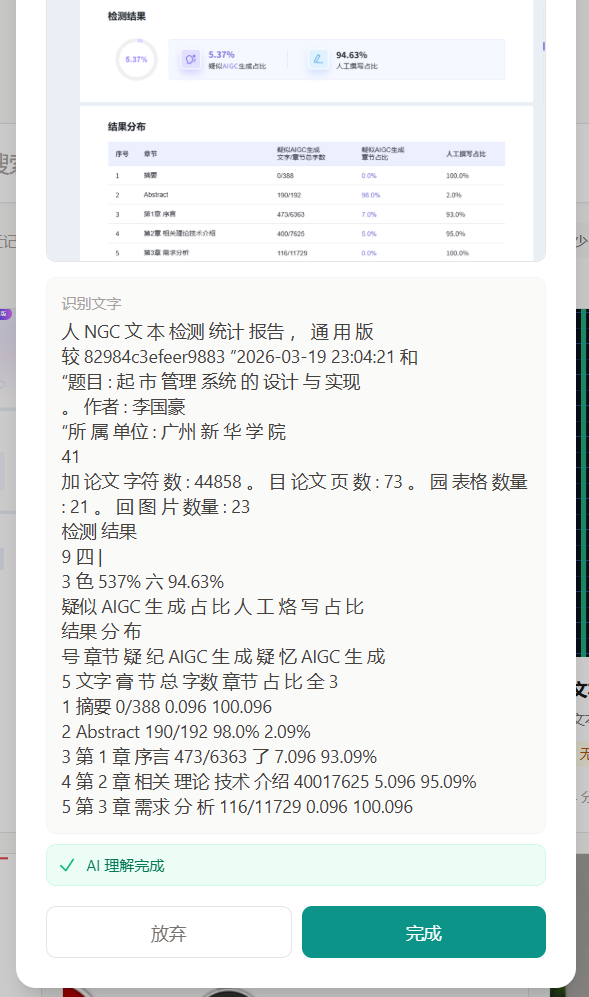
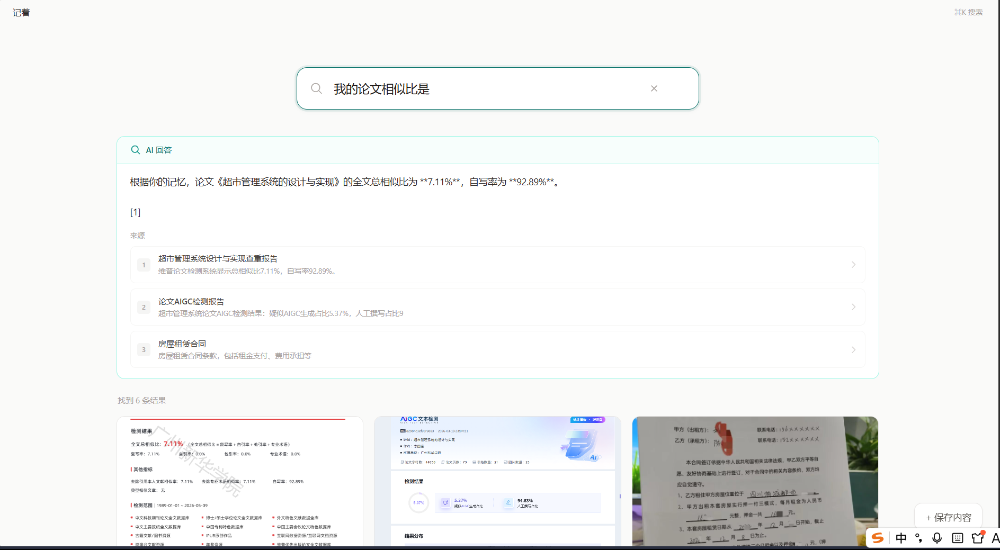
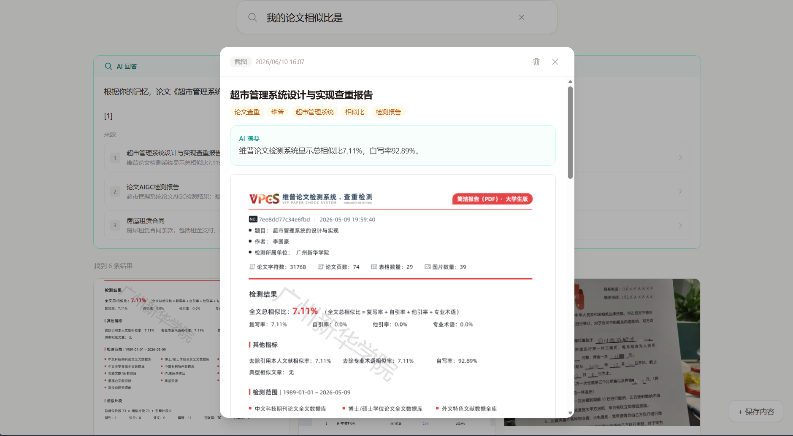
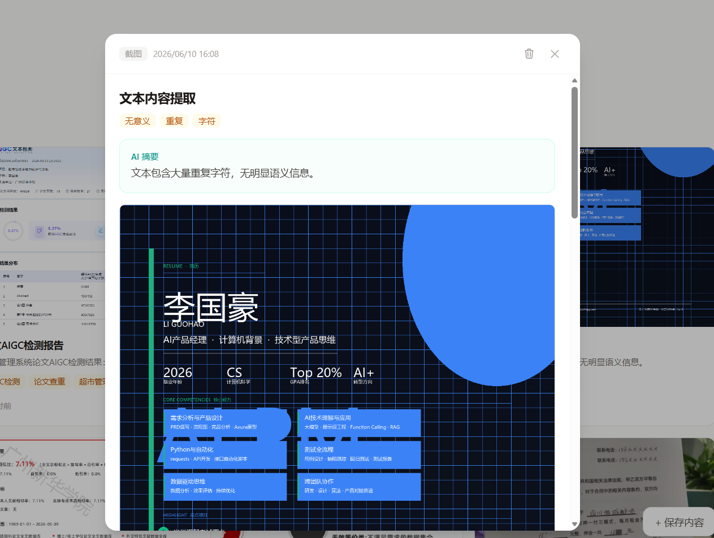
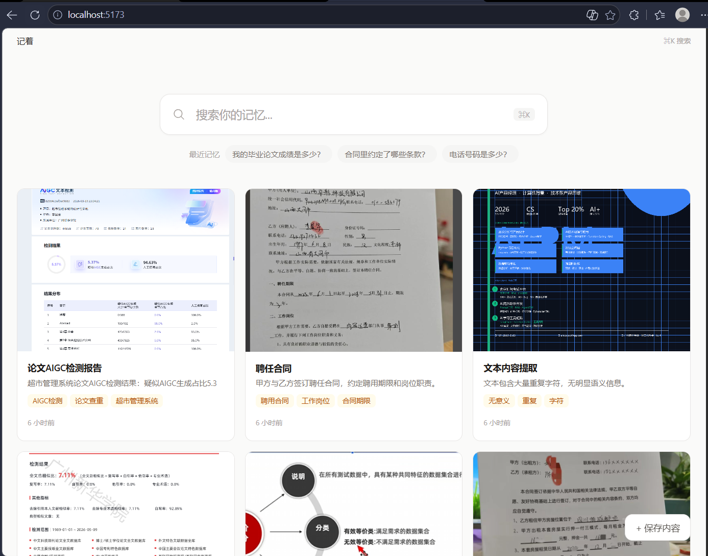

用户痛点
看到重要信息的第一反应是截图。但截图混入几千张生活照片后，再也找不到。
微信只搜文字关键词、相册 OCR 不理解语义、笔记软件需要手动整理。三者都无法满足「一时兴起存进去，未来模糊想起找回来」的需求。
「万一以后要用呢？」让用户积压数千条聊天记录和截图。但没有检索能力的存储只是负担。
产品方案
核心假设：如果 AI 能在存入时自动理解内容，用户完全不需要整理。产品定位：一个面向个人数据的搜索引擎。
竞品分析
AI 笔记，需主动输入。无 OCR，有问答但无来源引用。云端
视觉记忆库，零整理。有自动标签但无问答能力。云端
全自动截屏时间线，本地处理。隐私争议大，资源占用高。本地
全功能工作空间。需手动建库，心智负担重，非个人记忆工具。云端
产品截图

01 空状态

02 记忆卡片墙

03 拖拽上传

04 OCR + AI 理解完成

05 AI 问答界面

06 结构化记忆详情

07 OCR 失败兜底

10 完整首页
项目复盘
截图 → 识别 → 关键词搜索。证明「存入 → 找到」可行。
Ollama 本地部署推理 300 秒/次 → 切换到 DeepSeek API，3 秒。速度优先。
Top3 记忆 → DeepSeek 生成答案 → 来源引用。产品从搜索引擎升级为记忆助手。
实体提取让 AI 回答从「良好」变为「81 分，良好」。
拒绝分类、拒绝知识图谱、拒绝 Agent——每次「不做」都在保护核心承诺：零整理。
2.3GB 模型下载 + 300 秒推理。追求技术纯粹性忽略了验证速度。切到 DeepSeek API 只用了 30 分钟。
MVP 大量时间花在 tesseract.js 调优上。但核心差异化是问答。应先做纯文本问答原型验证假设。